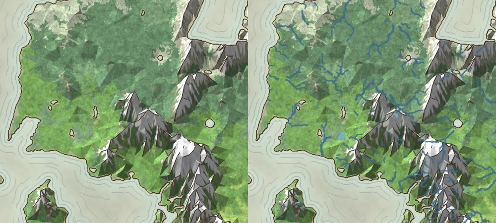
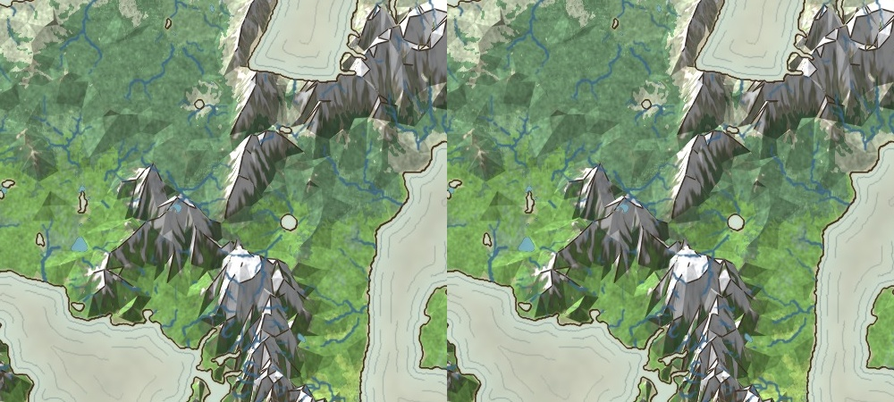
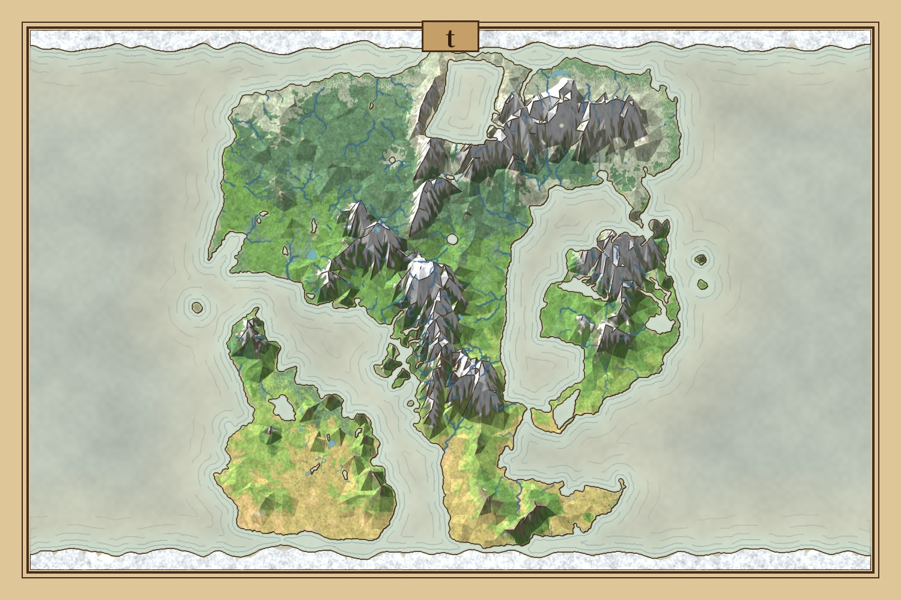
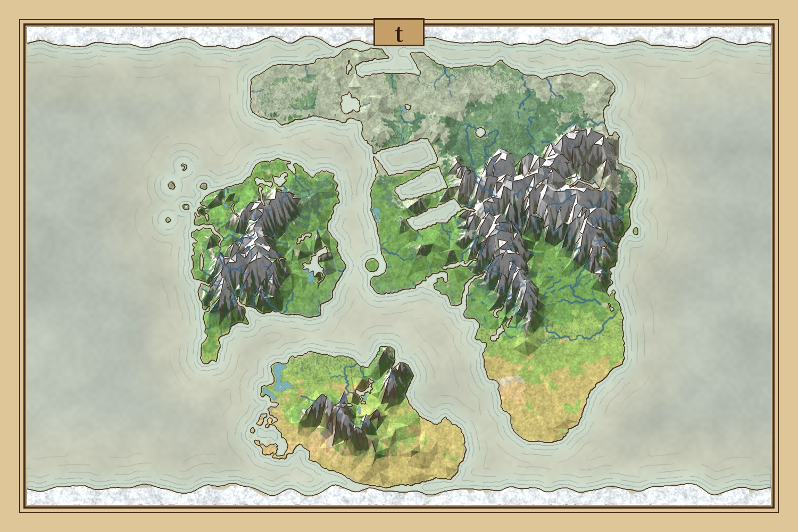
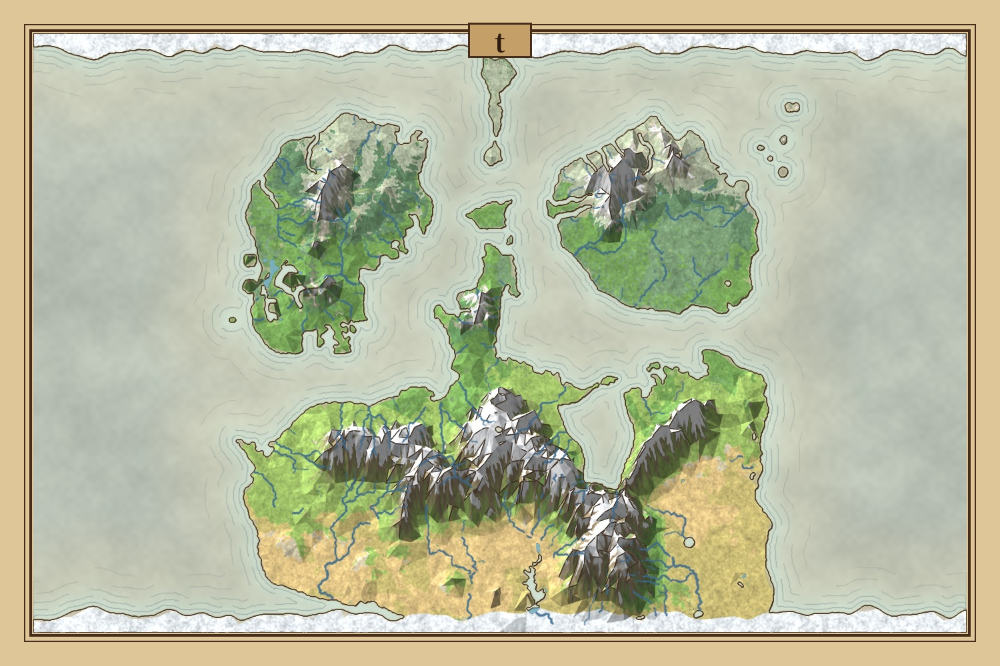
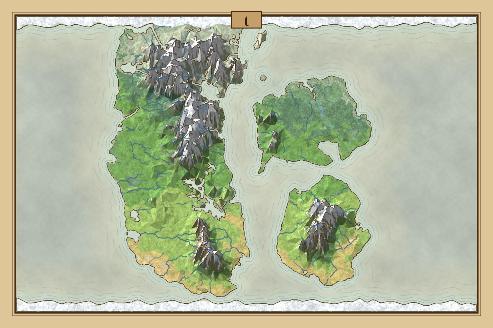
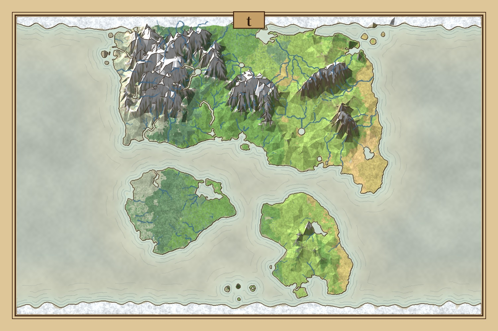

川と湖(試作・11-20)
概要: PWG(世界生成器)が持つ「川の流量」と「湖」のデータを取り出し、絵の上に描きました。川は流量が多いほど太く、山の高い所では薄く、湖は青い面+細い輪郭です。海岸v2(mapstyle45)・浅瀬強めと同じ設定の上に重ねています。
拡大(左=川なし、中=最初の太さ、右=細くした今回)
ご指摘(11-20 20:53)で、川の幅を約6割にしました。

絵番号 E001
山の上の方には描かない(左=前、右=今回)
ご指摘(11-20 21:14)で、高さが48より上で川を薄れさせ、60で消えるようにしました(前は山の上でも約4割残っていた)。

全体

絵番号 E002

絵番号 E003

絵番号 E004

絵番号 E005

絵番号 E006
やったこと
- PWGの出力から、川の流量と湖の位置を取り出す道具(pwg_dump_world.ts)を直した。
- 世界データと同じ位置・向きにそろえる道具(pwg_rivers.py)を作った。世界7・5・16・4は回転なし、世界1は回転あり。
- 絵に重ねる処理(illus.py の FM_RIVER=1)を足した。川は「流量が毎秒12トン以上」の流れだけ描く(3トンにすると支流だらけで線の網になった)。
目で見た評価(各1枚)
- 川が山から海へ流れる向きに見え、山脈のふもとから集まる形は自然。
- 小さな青い湖が点々と入り、地図らしさが増した。
- 細くしたら、線が目立ちすぎず絵になじんだ。太い川と細い川の差は小さい。
限界・未確認
- 各世界1枚・目視のみ。iPhoneでの見え方は未測定。
- 大きな「四角い湖」は、データ側で海と同じ扱いになり、波線のある淡い四角として残っている(未解決)。
- 川の太さ・湖のゆらぎの数字は私が決めた初期値。
- 3D表示には未反映。川は山の絵に隠れる所がある。
次の一手: 川の濃さ・太さ・どこまで描くか(支流を増やすか)を見て判断していただく。
ハブにもどる